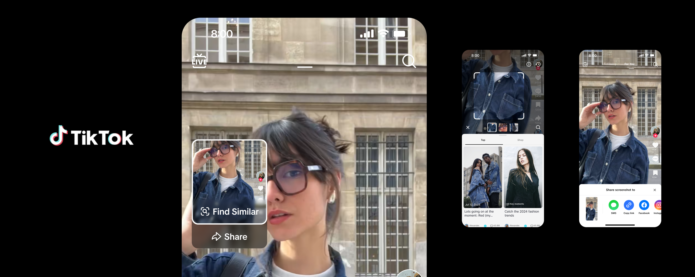
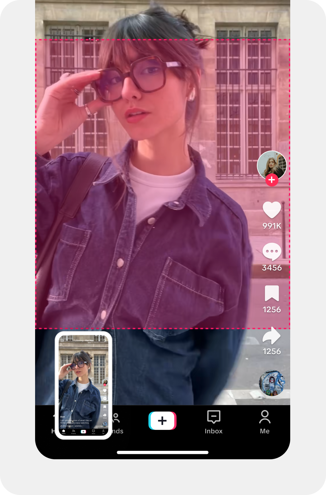
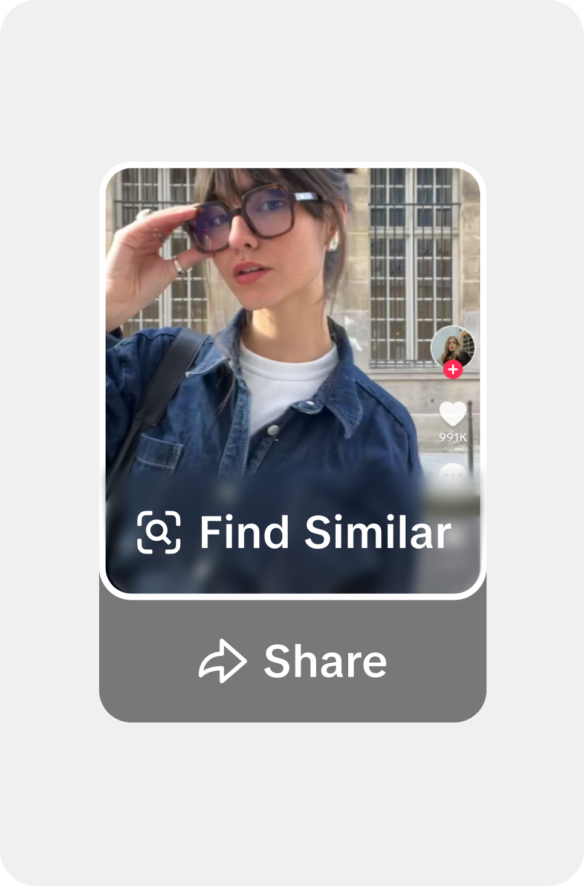
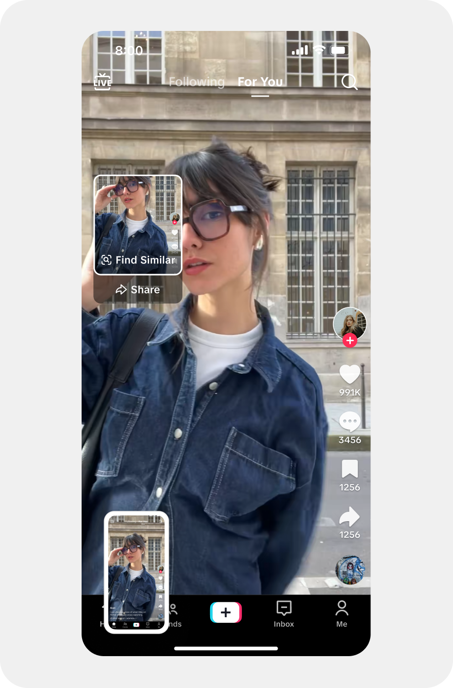
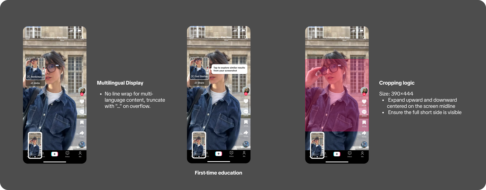

TikTok Screenshot Search
Users screenshot content to identify items, find similar products, and save for later — three high-intent signals TikTok had no mechanism to capture.
We embedded visual search directly into the video player: a lightweight overlay triggered on screenshot, letting users search without ever leaving the app.

A screenshot is not just a saved frame — it's a high-confidence visual search intent.
When users screenshot TikTok content, they're expressing one of three strong intents: identify ("what is this?"), find similar ("where can I buy?"), or save to act later. These intents are concentrated and high-conversion — but TikTok had no mechanism to capture them.
- Over 60% of system-level visual search requests (Circle to Search and equivalents) originate from social platforms. TikTok accounts for approximately 15% of that traffic.
- Douyin's screenshot search path has been live for nearly two years, growing from 1.58M to 2.12M page views annually, with entry point share stable at 17%.
Find an entry point that's lightweight and recognizable — without disrupting any existing interaction.
The solution space was deliberately narrow. Four hard constraints shaped every design decision.
Feed hot zones are densely packed
The right rail carries likes, comments, shares, and product pins in some markets. The overlay must avoid all of these while not occluding content — the available space is extremely limited.
The overlay must also carry Share
Screenshot Search isn't a standalone feature. The overlay needs to integrate both "Find Similar" and "Share" into one container — which determined the layout logic and information hierarchy.
Screenshot region: 390×444, centered on screen midline
The capture region expands up and down from the horizontal center, ensuring the rectangular frame is always fully visible. This fixed size constrained overlay positioning and content boundary decisions.
Android cannot render background blur
iOS frosted glass doesn't translate to Android. The overlay needed a design that maintained readability and visual hierarchy without relying on blur — requiring separate treatments per platform.
One lightweight overlay. Two actions. Triggered by a single screenshot.
The core interaction: after a screenshot, the overlay appears within the captured region, presenting "Find Similar" and "Share." Find Similar triggers image recognition and routes to results. Share enters the existing share flow. The overlay is deliberately restrained — it doesn't compete for content focus or create decision overhead.
Design decisions
Overlay position: bottom-left of the capture region
The right rail is occupied by high-frequency actions. Bottom-left is the only area that clears all hot zones while remaining within the screenshot frame.
Positions the overlay close to where users' thumbs naturally rest after a screenshot action, reducing reach distance for the most likely next tap.

Find Similar as the primary action, Share as secondary
Users who screenshot video content already have Share available through the standard UI — the new behavior is visual search.
Find Similar gets visual prominence; Share is present but subordinate. This hierarchy communicates that screenshot = search without requiring instruction.

Opaque dark background for Android, frosted glass for iOS
A single design can't work cross-platform: Android's rendering constraints block blur-based overlays.
Android receives a semi-opaque dark container with a thumbnail of the screenshot frame, maintaining scene context without blur. iOS uses the standard frosted glass treatment. Same UX architecture, different visual implementation.

Good products don't just handle the main flow — edge cases define the product's quality.
Text overflow → truncate, don't wrap
Some languages run long in fixed-width containers. The solution is ellipsis truncation — layout stability takes priority over text completeness, because the icon already communicates the function.
First-time onboarding prompt
On first screenshot, a one-line guide appears: "Tap to explore similar results from your screenshot." Shown once only — informs without repeated interruption.
Frame boundary guarantee
The 390×444 region expands from the screen's horizontal midline. Regardless of when in the video the screenshot is taken, the rectangular frame is always fully visible — never clipped by top or bottom UI chrome.
No-blur fallback maintains context
The Android thumbnail-based approach preserves the same scene grounding as the iOS blur. Users understand they're acting on the content they just captured — platform parity at the experience level, not the implementation level.

What a 5-day sprint taught me about finding opportunities in existing behavior.
Find intent in behavior, not in feature requests
The screenshot wasn't a search request — it was a behavior signal. The PM opportunity was recognizing what the action meant, not building what users asked for. Intent lives upstream of articulated need.
Lightweight ≠ low effort. Restraint is an active choice.
The overlay is small. That took more decisions, not fewer — every pixel of position, every hierarchy call, every word in the onboarding prompt was a deliberate choice to not add more.
Edge cases reveal product assumptions
The Android blur constraint forced us to find what the frosted glass was actually doing (creating scene context) and replicate the function, not the form. Edge cases are assumption audits.
The tradeoffs in a 5-day sprint
The sprint format demands ruthless prioritization. We deferred personalized result ranking and cross-surface consistency work. Knowing what to leave out is as important as knowing what to build.